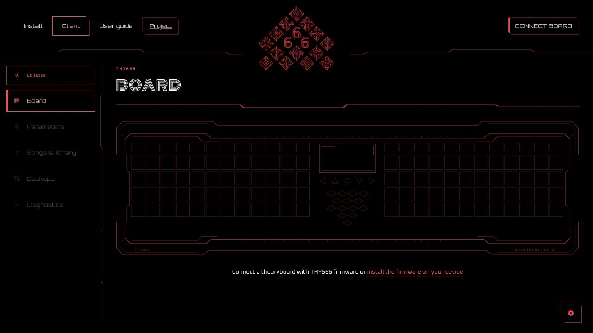

Play
Choose a root and scale. Play a chord with one pad, shape its voicing, then add a melody. Chromatic, scale, guitar and piano layouts give the right half a different feel.
Chords & layouts →Firmware / Updater / Web client
Open source firmware for TheoryBoard THY333. Shape chords, explore melodies and build sequences on the instrument you already own.
Hardware alpha · Windows tested · Still evolving
Chords on the left. Melody on the right.
One shared musical
engine underneath.
Start with music
Choose a root and scale. Play a chord with one pad, shape its voicing, then add a melody. Chromatic, scale, guitar and piano layouts give the right half a different feel.
Chords & layouts →Set strike or fixed velocity for each half. Tune sensitive or modified pads. Use Aftertouch and optional MPE pressure/glide with a compatible receiver.
Expression & MPE →Select a step on the left, then play its notes or chord on the right. Build a track, record a take and give each track its own MIDI route.
Build a first sequence →· Synthetic C-rendered examples
See what you play
Read the chord above its notes in Simple. Follow harmony around the circle of fifths, watch the piano, or choose a moving visualization. Note-colored pads show the playing surface at a glance.
Two Arps turn held material into phrases. The sequencer provides 21 tracks, 48 editable steps per track and a shared pool of 512 events.
Choose a view →The instrument, connected
One Client, available in your browser and as a desktop app. Both bring together firmware updates, the live board display, settings, diagnostics and backups. Use desktop Chrome or Edge for the browser version, or the desktop app for native USB access. Choose Connect board when you’re ready.
Connected pads are for inspection; playing stays on the physical board. The screen and controls follow the instrument.
Open Client
Built in the open
v0.2 is available as the current development version. Musical integration continues within this milestone; planned additions are identified below. Later milestones describe our direction, without promised release dates.
Chords, scales, MIDI, Arps, sequencing, views and expanded settings. Initial Windows desktop updater.
Initial MVPAvailable: browser and desktop Client, shared firmware updater, expression settings and live-pad MPE. Local macOS builds run; macOS/Linux hardware qualification remains in progress.
Next within v0.2: suggested next chords, harmonic following, modulation guidance and optional automatic voice leading. Scale discovery and richer voicing tools complete this musical integration work.
Available · musical additions plannedChord-aware tracks and progression entry, with explicit root/scale following alongside existing absolute-note recordings. Integrate chords, voicings and Arps into the sequencing workflow.
A fuller step-effects toolkit: gate and ties, probability, ratchets, loop conditions, playback directions, Euclidean fills and rotation. Expand pattern and song organization within the instrument’s timing and memory budgets.
PlannedExplore new engines and live musical processors, including repeating strum, note repeat, harmony and echo. Extend MIDI with clock/transport output, assignable CC and Program Change, and pedal integration.
Exploration · scope to be definedUpdates can reset settings. Configuration backups are not raw flash images. Automatic rollback and interrupted-update recovery remain unverified. MPE currently serves live pads only.
Detailed scope and qualification →